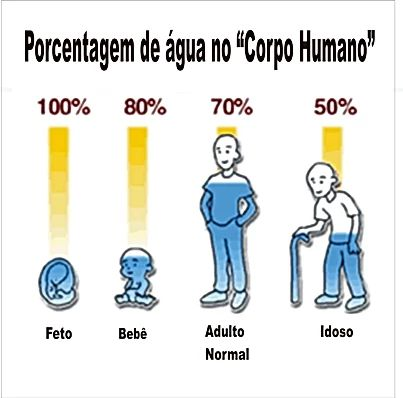

No poema, O Rio, de João Cabral de Melo Neto, a linguagem transmuta Rio em Homem e Homem em Rio, em seu relacionamento recíproco. As naturezas se confundem de forma indivisa: o rio humanizado e o homem fluvial.
Os rios que eu encontro
vão seguindo comigo.
Rios são de água pouca,
em que a água sempre está por um fio.
Cortados no verão
que faz secar todos os rios.
Rios todos com nome
e que abraço como a amigos.
Uns com nome de gente,
outros com nome de bicho,
uns com nome de santo,
muitos só com apelido.
Mas todos como a gente
que por aqui tenho visto:
a gente cuja vida
se interrompe quando os rios.
João Cabral de Melo Neto, O rio
Assista o documentário da National Geographic e reflita sobre a relação homem- natureza e especificamente sobre a relação homem- água.
“Nós humanos não somos separados da natureza, somos parte dela e nada faz do que dependamos mais da natureza do que a nossa sede por água. Aprendemos de uma maneira difícil que se interrompermos demais o fluxo de água, a vida selvagem e os seres humanos sofrem”, diz o cientista e conservacionista que apresenta esse documentário.
Você sabe o porquê precisamos de água? E qual a porcentagem de água no organismo humano? Ela varia com a idade, e é fundamental na manutenção da vida. Assista o vídeo a seguir para saber um pouco mais sobre isso.
A água é responsável pela manutenção da vida. Embora elementar também é rodeada de contradições. Agora vamos assistir a vídeo e descobrir mais sobre a água: reluzente, intangível, molhada. Parece tão simples, mas ainda não conhecemos tudo sobre ela. Se temos tanta água em nosso corpo, por que uma pequena quantidade pode nos afogar? Por que os rios são doces e os oceanos salgados? Por que o gelo flutua na superfície da água líquida? Como tudo funciona?
Qual a sua relação com a água? Que pensamentos essas imagens produzem em sua mente? Clique no link e viaje por essas águas.
https://www.nationalgeographicbrasil.com/photography/2021/03/galeria-de-fotos-rios-mares-lagoas-geleiras-dia-da-agua?image=moraine-lake-view-canda